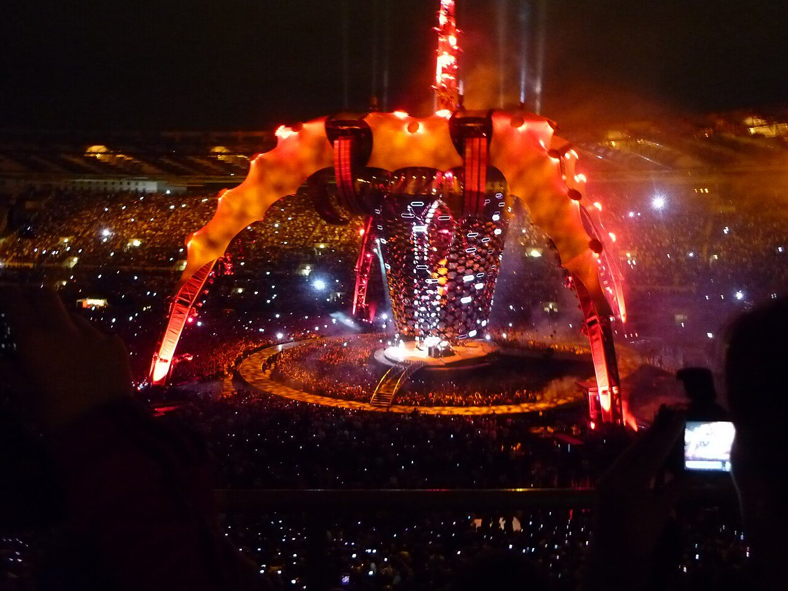
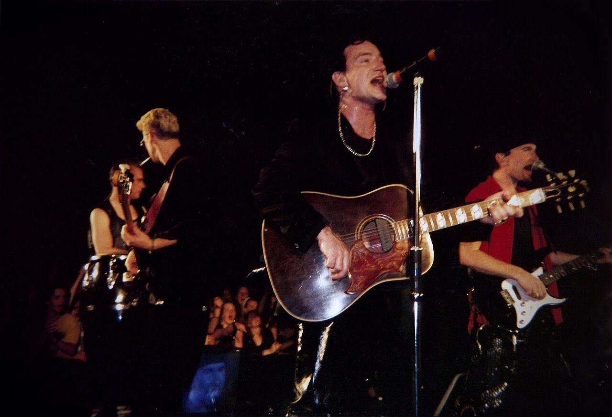
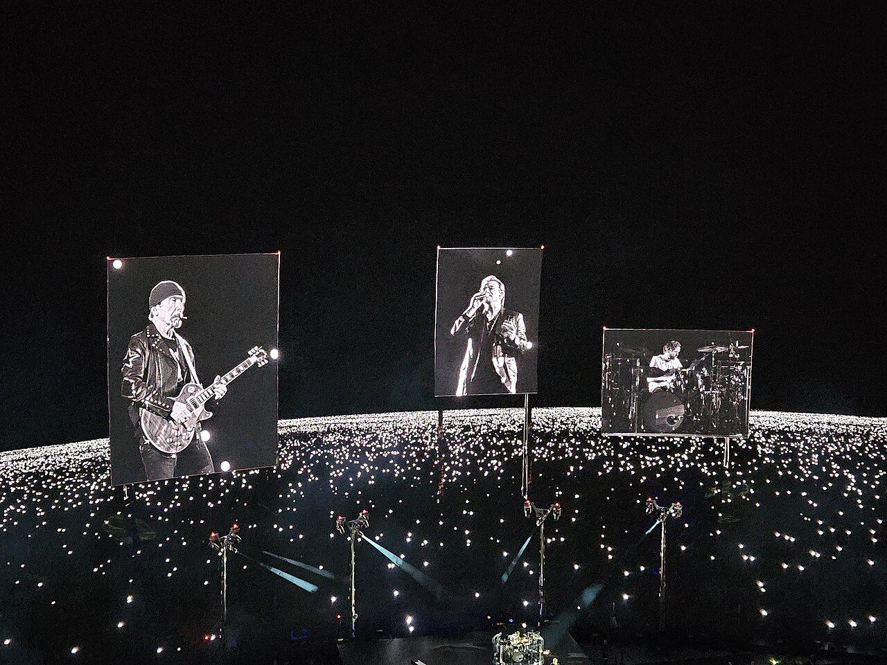
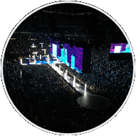
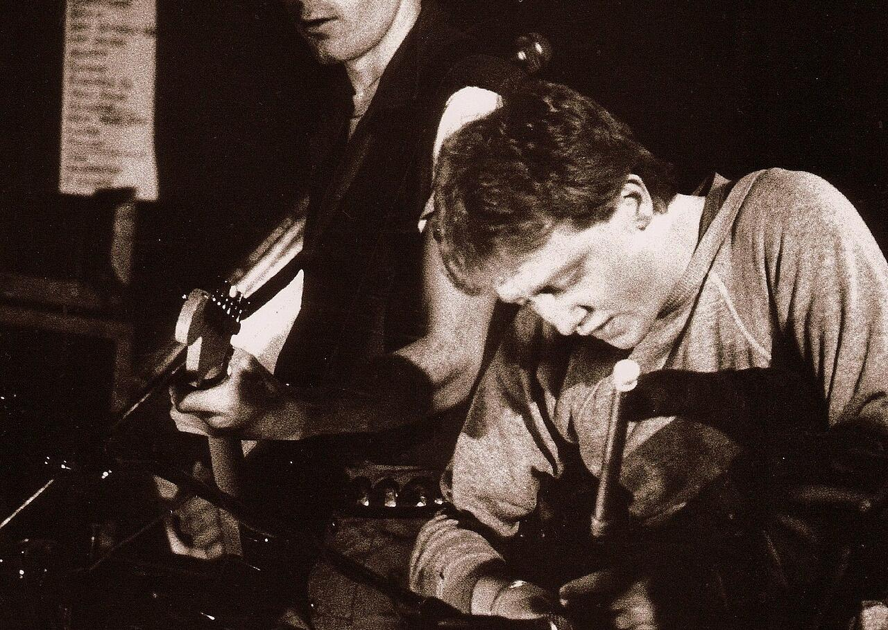
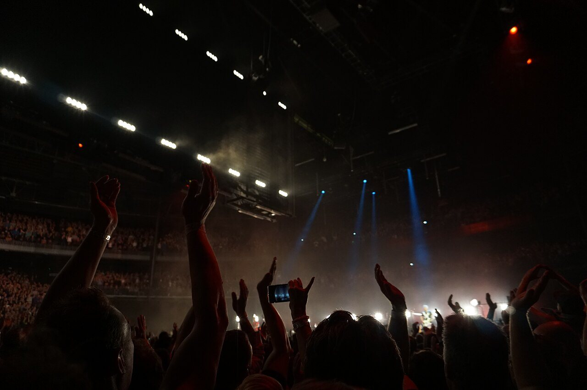
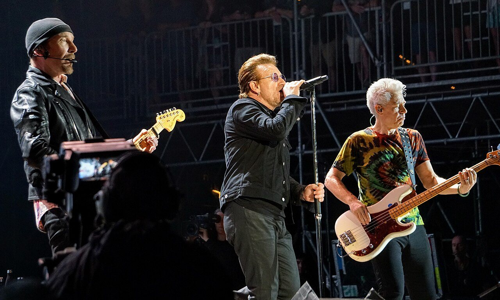
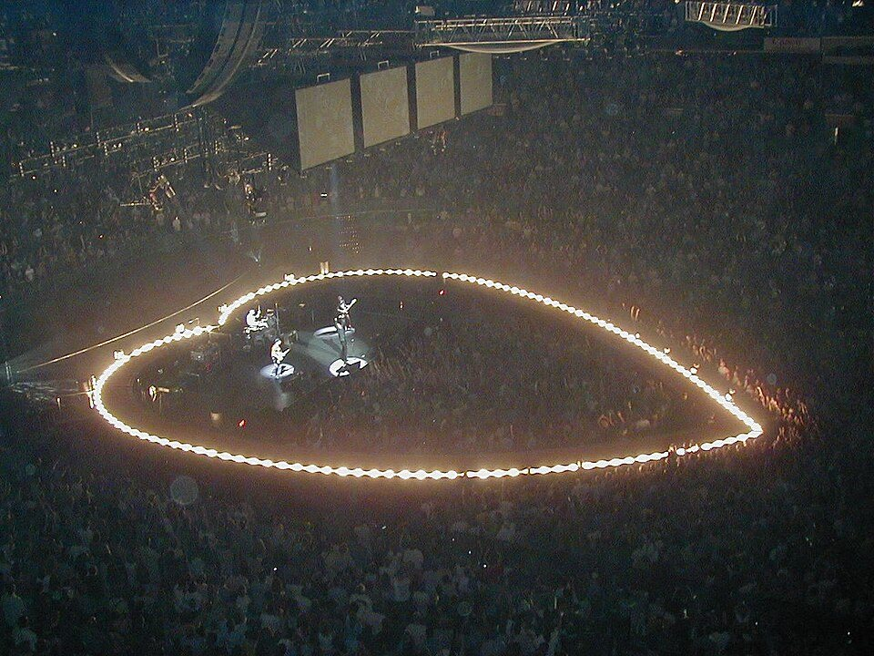
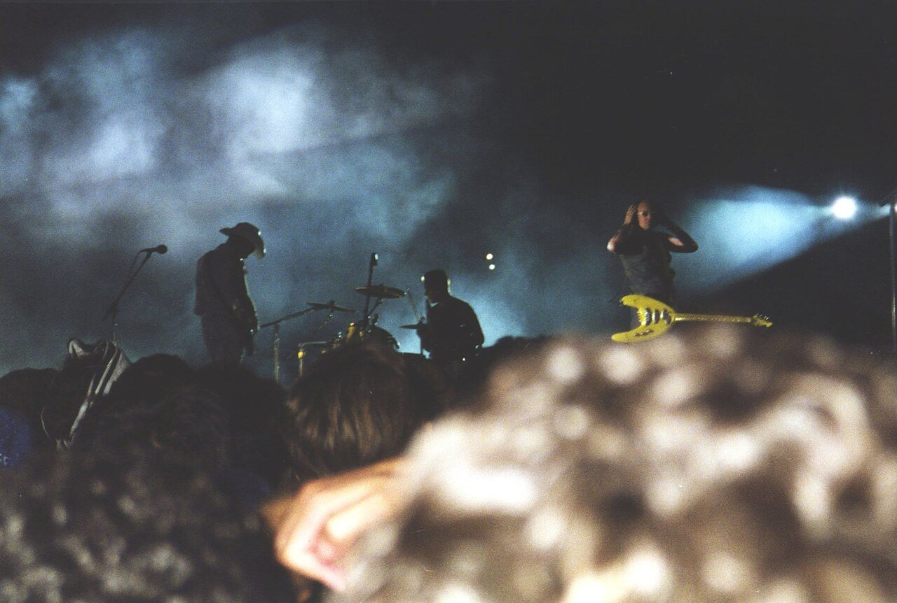

U2 Live Analytics · design preview, revision 3 (T-29)
Target look at 1280 × 720, using only elements Power BI can render (wireframes §1–2). All numbers, headlines,
song rankings and setlists are placeholders, not results. Page 1: click an era badge (a bookmark in Power BI).
"Show how each block is built" labels every block: native visual, image, SVG measure, HTML measure (HTML Content Secure) or Deneb.

OverviewOn the roadSongsAlbumsSetlistsSphereShowsAbout
Fifty years on the road, and the hits never left the set
First glimpse
From Dublin clubs in 1976 to a sphere in the desert: 1,875 shows in 61 countries.
Most nights were built on the same spine of songs, and Pride has been there for four decades.
1,875
shows
all eras
388
different songs
all eras
61
countries
all eras
Pick an era i
1981: 150 shows, most of them from the back of a van
Each bar is a year, shaded by era. Icons mark where each tour began. i
The ten songs played most
OverviewOn the roadSongsAlbumsSetlistsSphereShowsAbout
The eighties never left the setlist
Every new album gets its moment, then the 1980s songs take the stage back.
Even on the 2017 anniversary tour, half of every night came from records made before 1990.
Share of songs played, by the decade their album came out i
↘ 2017: the 80s still took half the night
Which albums stay i
Read across a row: The Joshua Tree never drops below a tenth of the set, while most 2000s albums fade within ten years.

41%
of Zoo TV performances came from Achtung Baby, the album it promoted
How much of each tour promoted the new album i

Residency · Sphere, Las Vegas · 2023–24
40
shows
22
songs a night
78%
Achtung Baby
OverviewRoadSongsAlbumsSetlistsSphereShowsAbout
At the Sphere, one album carried the night
Forty nights in one room, built around Achtung Baby played in full.
Compared with the four 2015–2019 tours▾, the residency was shorter, steadier and older.
Residency

Touring 2015–19
Difference
Songs a night
−2
Different songs
−63
Achtung Baby share
+66 pp
Achtung Baby, every single night
Every show, one dot iSongs per showRarities per showAchtung Baby songs

OverviewOn the roadSongsAlbumsSetlistsSphereShowsAbout
← back to the list of shows
War Tour
14 AUG 1983
Phoenix Park Dublin, Ireland
Show 284 of 1,875 17 songs · 2 encores
setlist.fm ↗
17
songs, tour average 16.4
1
live debut tonight ★
2
covers
a home-town show at the end of the War Tour
They kept coming back to the same cities
U2 played 61 countries and 412 cities, but a short list of home stages
(Dublin, London, New York, Los Angeles) hosted one show in six. Europe and North America split the career almost evenly.
Bubble size = shows in the city. i

Dublin · 80
shows in the home town, more than any other city
Most-visited cities i
Where the shows were, decade by decade

Pride · 1,130×
the song they played most, since 1984
Some songs never miss a night
388 songs reached a stage, but the top 20 fill half of all performances; 96 songs were played twice or less.
Explore the songs iX: release yearlive debut Y: performancesyears since last played
Every song, most played first i
Rarities: played twice or less
Other people's songs, and guests
Stadium tours run on rails
Each row is a song, each column a year: the brighter the cell, the more often it was played.
The club years were a lucky dip; the stadium years a fixed spine of Pride, Sunday Bloody Sunday and I Will Follow.

Elevation's heart stage: same songs, closer crowd
Setlist variety per tour i
Songs per show, by year
How the night startsOpenersClosersEncores

← back to the songs
Song · from The Joshua Tree (1987)
Where the Streets Have No Name
930
performances
▲ #4 of all songs
1987-04-02
live debut
Tempe, Arizona
2024-03-02
last played
Sphere, Las Vegas
2
years since
still in the set
↙ never left the set after its 1987 debut, opening night after night
Tour by tour i
Where in the night it is played
Mostly in the main set's closing stretch, rarely the opener.
About the data, and the photos
Sources
setlist.fm: every U2 show and setlist, through the setlist.fm API (free for non-commercial use; data
contributed by fans). MusicBrainz: albums, tracks and songs (CC0). The pipeline loads both weekly into
Microsoft Fabric (Bronze → Silver → Gold) and this report reads the Gold warehouse through a Direct Lake model.
Limitations i
160
shows without a setlist
1.9%
performances not matched to a song
2026-10-21
last refresh
Early club shows (1976–1980) are often missing. Snippets and tapes are flagged and not counted as performances.
Photo and icon credits
Tour icons
1 free official logo (U2 360°, PD-textlogo, background made transparent) and 23 original glyphs plus "(No tour)". Redrawn: the Joshua Tree tree (spiky leaf clusters) and PopMart (lemon with leaf).
Era badges (era picker on page 1)
Circular crops of the era photos; 1976–1980 has no free photo, so its badge is a glyph.
Timeline strip, arrows and scrims
Tour icons at each tour's start year (static fallback; the Deneb chart on page 1 draws them from data) · hand-drawn arrows in accent · gradient scrims (bg 92% → 0) behind text on photos.
arrow_curve_down_rightarrow_curve_down_leftarrow_loop_rightscrim_from_left over a photo